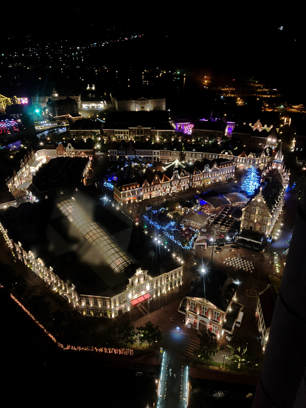

top
profile
blog
contact
ハウステンボス

こちらはわが県が誇るテーマパーク ハウステンボスです。
上の画像はハロウィンの時期に撮った写真です。
この時期は道のそこかしこにジャックオーランタン（かぼちゃのお化け）が見られました。
真ん中の写真の女性は妻です。
右の建物はプロジェクションマッピングで3Dイリュージョンが見られます。写真を撮っておけばよかったと後悔してます。


 真ん中の写真の女性は妻です。
真ん中の写真の女性は妻です。